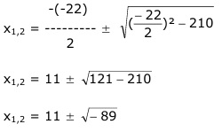
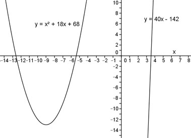

Aufgabe 81 An welchen Stellen x schneiden sich die Parabel y = x2 + 18x + 68 und die Gerade y = 40x - 142? Für die Schnittpunkte gilt: x2 + 18x + 68 = 40x – 142 |-40x x2 - 22x + 68 = – 142 |+142 x2 - 22x + 210 = 0 p, q – Formel: p = -22 ; q = 210  Der Ausdruck unter der Wurzel ist negativ, deshalb hat die Gleichung keine Lösung und die Parabel und die Gerade keine Schnittpunkte. 